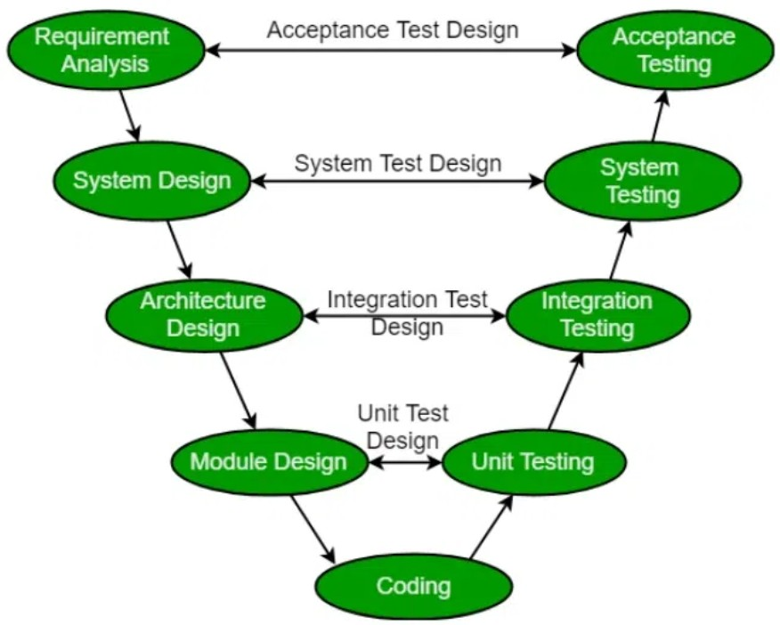
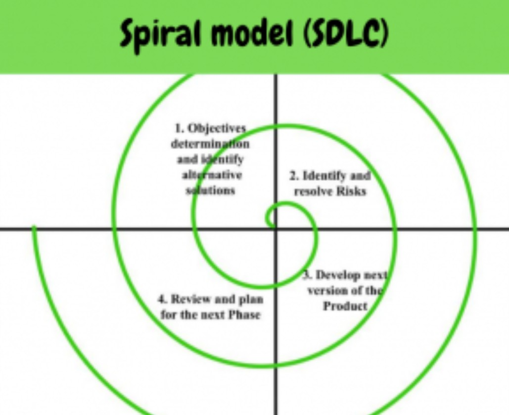
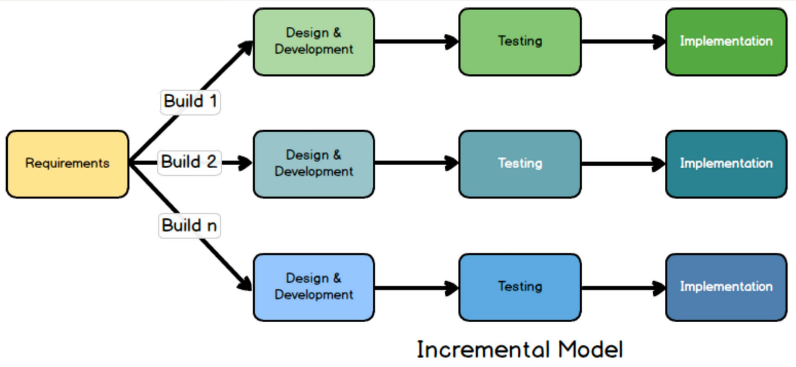
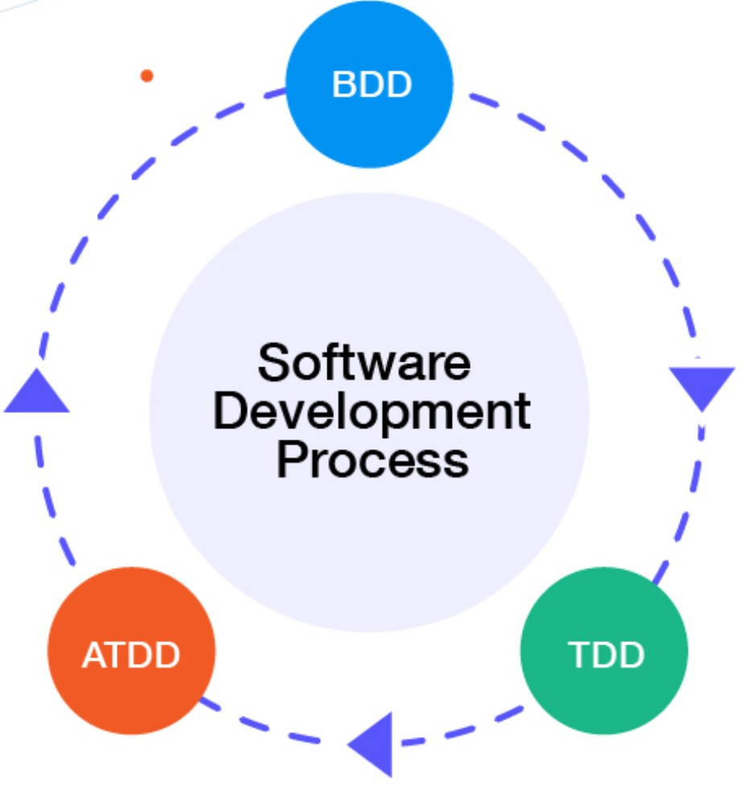
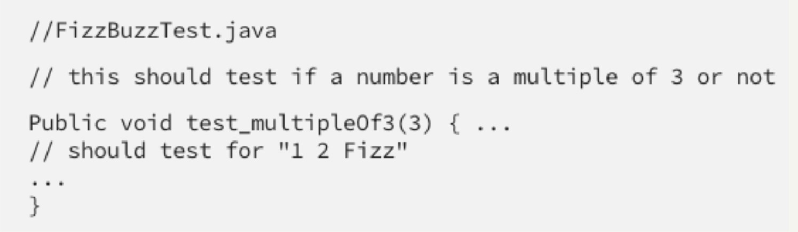
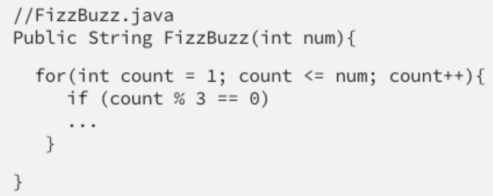
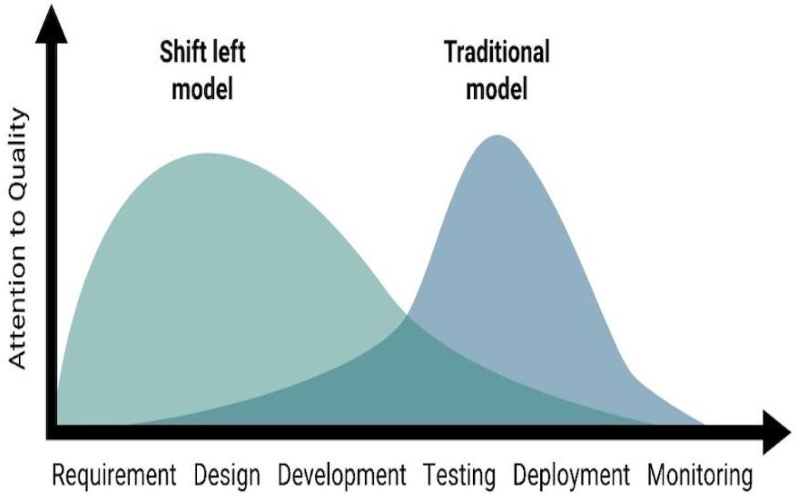
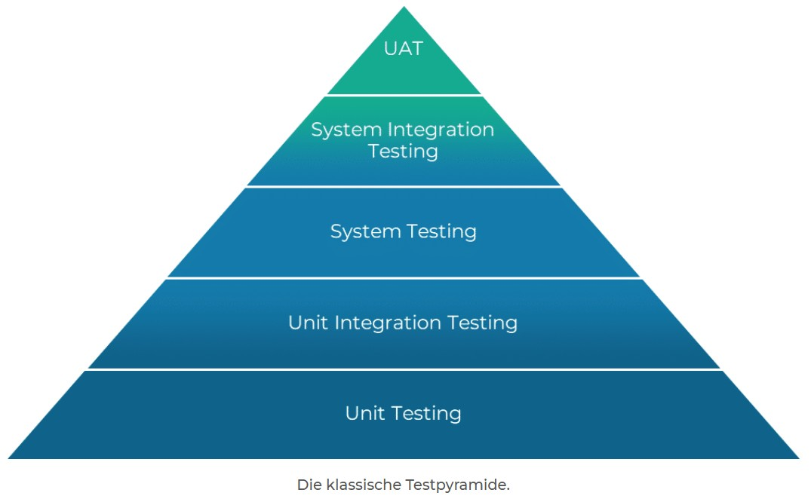

-
Titelfolie F 01
- Lektionstitel und Agenda F 01–02
-
Testing im Software-Entwicklungslebenszyklus F 03
- SDLC; Auswirkung auf Testing; Praktiken; Beispiel iteratives Modell F 04–07
-
TDD / BDD / ATDD F 08
- Testen als Treiber (TDD/ATDD/BDD) und TDD-Beispiel F 09–10
- BDD-Beispiel, Aufgabe und Lösung (Taschenrechner) F 11–13
-
CI/CD F 14
- CI/CD; Shift-Left; DevOps und Testing F 15–17
-
Teststufen und Testarten F 18
- Teststufen; Testarten; Beispiel funktional vs. nicht-funktional F 19–21
- Blackbox & Whitebox; Fehlernachtests und Regressionstests F 22–23
-
Statisches Testen F 24
- Begriff; Anwendbarkeit; Wert; statisch vs. dynamisch F 25–28
-
Feedback und Review-Prozess F 29
- Feedback; Review-Arten (Übersicht und Vertiefung) F 30–34
-
Quiz F 35
- Quizfragen F 36–40
-
Zusammenfassung
Der SDLC ist eine abstrakte Darstellung des Entwicklungsprozesses. Typische Versionen:
- Sequenziell (z. B. Wasserfallmodell, V-Modell)
- Iterativ (z. B. Spiralenmodell, Prototyping)
- Inkrementell (z. B. Unified Process)



Der Lebenszyklus definiert:
- Umfang und Zeitpunkt der Testaktivitäten (z. B. Teststufen und Testarten)
- Detaillierungsgrad der Testdokumentation
- Wahl der Testverfahren und des Testansatzes
- Umfang der Testautomatisierung
- Rolle und Aufgaben eines Testers
- Für jede Software-Entwicklungsaktivität gibt es eine entsprechende Testaktivität
- Unterschiedliche Teststufen haben spezifische und unterschiedliche Testziele
- Testanalyse und Entwurf während der ersten Entwicklungsaktivitäten (frühes Testen)
- Tester werden in das Review von Arbeitsergebnissen einbezogen
Anforderungsanalyse → Design → Entwicklung → Testing → Lieferung
- TDD (Testgetriebene Entwicklung): Lenkt die Codierung durch Testfälle
- ATDD (Abnahmetestgetriebene Entwicklung): Leitet Tests aus Akzeptanzkriterien als Teil des Systementwurfs ab. Tests werden geschrieben, bevor der Teil der Anwendung entwickelt wird
- BDD (Verhaltensgetriebene Entwicklung): Drückt Verhalten durch simple Sätze aus, die später in automatisierte Tests umgewandelt werden sollen — Schema: Given / When / And / Then

- Testcode schreiben:
- Produkt entwickeln:
- Überarbeiten und optimieren


Applikation: Simpler Taschenrechner
Aufgabe: Schreibt ein Szenario im Given-When-Then-Stil für: „Als Nutzer möchte ich zwei Zahlen zusammen addieren können.“
Given zwei positive Zahlen 3 und 5 When der Nutzer beide Zahlen addiert Then soll das Ergebnis 8 sein
Was soll passieren, wenn der Nutzer Buchstaben anstatt Zahlen eintippt? Überlegt euch, wie sich das Given-When-Then ändert.
Mögliche Lösung:
Given der Nutzer tippt 8 und 0 (oder None) ein When der Nutzer beide Werte addiert Then soll eine Fehlermeldung angezeigt werden: "Invalid input, please enter numbers only"
- Continuous Integration (CI) = Kontinuierliche Integration: Code soll automatisch und oft in ein zentrales „Code Repository“ integriert werden
- Continuous Delivery and/or Deployment (CD) = Kontinuierliche Auslieferung: Integration, Testing und Auslieferung von Codeänderungen. Im modernen Umfeld automatisiert
- Die Delivery Pipeline = DevOps-Auslieferungskette: Ein automatisierter Prozessablauf, der aus allen Schritten der CD besteht und somit per Knopfdruck Änderungen zum Kunden liefern kann
Shift Left = Frühes Testen
Best Practices:
- Review der Spezifikation
- Schreiben von Testfällen, bevor der Code geschrieben wird
- Verwendung von CI und CD
- Abschluss der statischen Analyse des Quellcodes
- Durchführung von nicht-funktionalen Tests

Quelle: developer.paypal.com/community/blog/shiftleft-softwareqa/
Vorteile von DevOps:
- Schnelle Rückmeldung über Codequalität
- Fördert Shift-Left — Entwickler muss Unit-Tests mitliefern
- Nicht-funktionale Qualität steigt (z. B. Performance und Zuverlässigkeit)
- Automatisierung reduziert nötige wiederkehrende Tätigkeiten
- Risiko von Regression wird reduziert
Risiken und Herausforderungen:
- DevOps-Auslieferungskette muss definiert werden
- CI/CD-Werkzeuge müssen eingeführt und gewartet werden
- Testautomatisierung erfordert zusätzliche Ressourcen und muss gewartet werden
- Abnahmetest: Validierung und Nachweis der Eignungstauglichkeit
- Systemintegrationstest: Schnittstellen zwischen internen und externen Systemen
- Systemtest: Testet das Gesamtverhalten des Systems
- Komponentenintegrationstest: Testet Schnittstellen und Integrationen
- Komponenten (Unit Tests): Isolierte Komponenten

Quelle: Raphael Dumhart — MVP: Der beste Tech-Stack (Gedanken zur Teststrategie / Testpyramide)
- Funktionale Tests: Erfüllt das System die Anforderungen? (Was?)
- Nicht-funktionale Tests: Erfüllt das System die Erwartungen? (Wie?)
Was macht das Auto? (funktional)
- Der Motor startet mit dem Drehen des Schlüssels
- Die Lichter können ein- und ausgeschaltet werden
- Die Bremse stoppt das Auto
Wie funktioniert das Auto? (nicht-funktional)
- Wie schnell werden 100 km/h erreicht?
- Wie einfach kann das Auto gestohlen werden?
- Startet das Auto auch bei Kälte oder Hitze?
- Blackbox: Der Code bzw. die Struktur des Systems bleibt unbekannt. Die tatsächliche Funktionalität wird mit den Anforderungen verglichen
- Whitebox: Wir kennen den Code und die Struktur und verwenden das für unsere Tests
- Fehlernachtest: Stellt sicher, dass ein gefundener Fehler behoben wurde
- Regressionstest: Stellt sicher, dass Änderungen keine nachteiligen Folgen haben
Beim statischen Test muss die zu testende Software nicht ausgeführt werden. Arbeitsergebnisse werden bewertet durch:
- Manuelle Prüfung (z. B. Review)
- Mit Hilfe eines Werkzeugs (z. B. statische Analyse)
[JA] Wo kann es angewendet werden?
Jedes Arbeitsergebnis, das gelesen und verstanden werden kann, kann Gegenstand eines Reviews sein.
[NEIN] Wo kann es nicht angewandt werden?
Arbeitsergebnisse, die für den Menschen schwer zu interpretieren sind und die nicht mit Hilfe von Werkzeugen analysiert werden sollten.
- Kann Fehlerzustände früh aufdecken
- Möglichkeit, Arbeitsergebnisse zu bewerten
- Anforderungen werden geprüft — entsprechen wirklich den Bedürfnissen
- Kann zu einem gemeinsamen Verständnis zwischen den beteiligten Stakeholdern beitragen
- Shift Left + direktes Testen → reduzierte Projektkosten
Statisch:
- Findet Fehlerzustände direkt
- Kann auf nicht ausführbare Arbeitsergebnisse angewandt werden
- Findet Fehler in Code, der selten ausgeführt wird
- Misst Qualität von Code unabhängig von der Ausführung (z. B. Wartbarkeit)
Dynamisch:
- Findet Fehlerwirkungen
- Nur für ausführbare Arbeitsergebnisse
Feedback ist ein Geschenk:
- Beugt Nacharbeiten vor
- Absicherung, dass das Produkt Bedürfnisse erfüllt
- Vermeidet Schuldzuweisungen
- Reduziert Kosten und Risiken des Scheiterns
- Inspektion: Da die Inspektion die formalste Art des Reviews ist, folgt sie dem vollständigen allgemeinen Prozess. Das Hauptziel ist das Finden von Anomalien
- Walkthrough: Ein Walkthrough, das vom Autor geleitet wird, kann vielen dienen, z. B. der Bewertung der Qualität und dem Aufbau von Vertrauen in das Arbeitsergebnis
- Technisches Review: Geleitet von einem Moderator wird eine Entscheidung bezüglich eines technischen Problems getroffen — bildet Vertrauen im Team
- Informelles Review: Folgt keinem definierten Prozess
- Formeller, strukturierter Prozess mit Checklisten und Fehlerprotokollen
- Wird von einem Team nach vordefinierten Regeln durchgeführt
- Wert: Am besten geeignet, um kritische Fehler vor der Produktion zu erkennen
- Der Autor erklärt seine Arbeit einer Gruppe (z. B. Anforderungen, Design oder Code)
- Prüfer geben Feedback und stellen Fragen, genehmigen die Arbeit jedoch nicht formell
- Wert: Hilft Missverständnisse zu erkennen und Klarheit sicherzustellen
- Eine schnelle und unstrukturierte Überprüfung eines Dokuments oder Codes
- Kann zwischen Teammitgliedern ohne formale Dokumentation erfolgen
- Wert: Erkennt grundlegende Fehler frühzeitig und spart Zeit
Hinweis auf Folie: „Das werdet ihr in eurem Projekt ganz automatisch durchführen.“
In welcher Stufe des Testens sollen nicht-funktionale Tests ausgeführt werden?
- A: Komponentenintegrations-Teststufe
- B: Systemteststufe
- C: Komponentenintegrations-, Systemtest- und Abnahmeteststufe
- D: Komponenten-, Integrations-, System- und Abnahmeteststufe (richtig)
Welche der folgenden Aussagen sind in einem iterativen Softwareentwicklungslebenszyklus wahr?
- A: Für jede Entwicklungsaktivität gibt es eine Testaktivität (richtig)
- B: Für jede Testaktivität muss eine Dokumentation erstellt, versioniert und gespeichert werden
- C: Für jede Entwicklungsaktivität, die Code erzeugt, gibt es eine Testaktivität, in der Testfälle dokumentiert werden müssen
- D: Für jede Testaktivität sollen Daten gesammelt und auf einem Dashboard dargestellt werden, um die Kommunikation mit den Stakeholdern zu gewährleisten
In welcher Hinsicht ist CI/CD ein Beispiel für Shift Left?
- A: Code erreicht das Produktivsystem schneller
- B: Es erlaubt den Entwicklern, Code kontinuierlich zu integrieren
- C: Es erfordert kontinuierliches Testing entlang des gesamten Prozesses (richtig)
- D: Es hebt die Tester als Verantwortliche für die Qualität hervor
Erläuterung: CI/CD erfordert kontinuierliches Testen, einschließlich Testautomatisierung über die gesamte Pipeline hinweg. So kann früh getestet werden — Shift Left.
Was ist der Hauptunterschied zwischen statischem und dynamischem Testen?
- A: Statisches Testen wird von der Entwicklung durchgeführt, dynamisches Testen von Testern
- B: Manuelle Testfälle werden für dynamisches Testen verwendet, automatisierte Tests für statisches Testen
- C: Statisches Testen muss vor dem dynamischen Testen durchgeführt werden
- D: Dynamisches Testen erfordert die Ausführung der Software. Beim statischen Testen wird die Software nicht ausgeführt (richtig)
Welches der folgenden Möglichkeiten ist ein Vorteil der statischen Analyse?
- A: Fehler können erkannt werden, die beim dynamischen Testen möglicherweise unentdeckt bleiben (richtig)
- B: Die frühzeitige Erkennung von Fehlern erfordert weniger Dokumentation
- C: Die frühe Ausführung des Codes liefert einen Anhaltspunkt für die Code-Qualität
- D: Es werden keine Tools benötigt, da statt der Ausführung des Codes Reviews verwendet werden